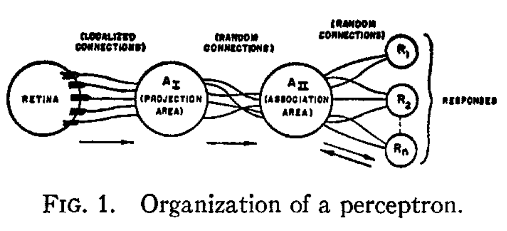
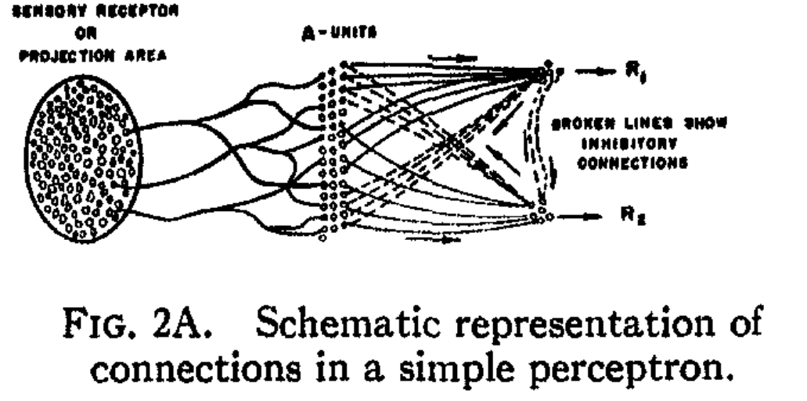

Machine Learning and Neural Networks
Roberto Santana and Unai Garciarena
Department of Computer Science and Artificial Intelligence
University of the Basque Country
Introduction to Neural Networks: Table of Contents
Initial neuron models
Hebbian learning rule
- Introduced by Donald Hebb and related to the ideas underlying the associationism model.
- The strength of the connection between two neurons should increase as the frequency of their co-ocurrence increases.
- Drawback: As co-ocurrences appears more, the weights do not cease to increase (unstableness of the Hebbian learning rule).
D. O. Hebb. The organization of behavior: A neuropsychological theory. Psychology Press. 1949.
H. Wang, B. Raj, and E. P. Xing. On the Origin of Deep Learning. arXiv preprint arXiv:1702.07800. 2017.
Initial neuron models
Hebbian learning rule
\[ \Delta w_i = \eta \, x_i \, y \]\( \Delta w_i \): change in synaptic weights between pre-synaptic and post-synaptic neurons.
\( \eta \): learning rate
\(x_i\): activation of pre-synaptic neuron $i$
\( y \): post-synaptic neuron reponse.
The update is proportional to the product of the activation and the response.
Initial neuron models
Fire together, wire together
- Hebb (1949): When an axon of cell A is near enough to excite a cell B and repeatedly or persistently takes part in firing it, some growth process or metabolic change takes place in one or both cells such that A's efficiency, as one of the cells firing B, is increased.
- Konorski (1948): If a presynaptic neuron "i" repeatedly fires a postsynaptic neuron "j" within a short time then the synaptic strength between the two is increased, otherwise it is decreased.
Perceptron
Characteristics
- Initially, an electronic device implementing some of the associationism ideas.
- It implements a linear function of the input signals.
- Perceptrons can learn to associate specific responses to specific stimuli.
- The memory of a perceptron is distributed in the sense that any association may make use of a large proportion of the cells in the system.

{kind=link}
F. Rosenblatt. The perceptron: a probabilistic model for information storage and organization in the brain. Psychological review, 65(6):386. 1958.
Perceptron
Characteristics
- Stimuli impinge on a retina of sensory units (S-points).
- Inputs are transmitted to a set of association cells (A-units) in a projection-area (\( A_{I} \)).
- The cells in the projection area receive each a number of connections from the sensory points.
Organization

F. Rosenblatt. The perceptron: a probabilistic model for information storage and organization in the brain. Psychological review, 65(6):386. 1958.
Perceptron
Characteristics
- Between the projection area and the association area ( \( A_{II}\)), connections are assumed to be random.
- The responses ( \(R_1, R_2, \dots, R_n \)) are cells which respond in much the same fashion as the A-units.
Organization
F. Rosenblatt. The perceptron: a probabilistic model for information storage and organization in the brain. Psychological review, 65(6):386. 1958.
Perceptron
Characteristics
- Sensory units: Collect data.
- Association units: Linearly add the data with different weights and apply non-linear transform on the thresholded sum.
- Response units: Receive the data from association units and output them.
Organization

F. Rosenblatt. The perceptron: a probabilistic model for information storage and organization in the brain. Psychological review, 65(6):386. 1958.
Perceptron
Learning
- Non-linear activation units are introduced.
- Weights are updated as:
\[ w_i(t+1) = w_i(t) + \left (d^j -y^j(t) \right) x^j_i, \]
where \( d^j \) is the desired output for sample \( x^j \)
Modern perceptron

H. Wang, B. Raj, and E. P. Xing. On the Origin of Deep Learning. arXiv preprint arXiv:1702.07800. 2017.
Perceptron
Common notation
- \(x=(x_1,\dots,x_n)\): Input vector.
- \(w=(w_1,\dots,w_n)\): Weight vector.
- \( w \cdot x \geq \theta \): Arithmetic test computed by the perceptron.
- \(x=(x_1,\dots,x_n,1)\): Extended input vector.
- \(w=(w_1,\dots,w_n,-\theta)\): Extended weight vector.
- \( w \cdot x \geq 0 \): Arithmetic test for extended vector and extended weight.
Modern perceptron
H. Wang, B. Raj, and E. P. Xing. On the Origin of Deep Learning. arXiv preprint arXiv:1702.07800. 2017.
Perceptron
Learning
At epoch \(t\), predictions are made as:
\[
y^j(t) = \begin{cases} 1, & \mbox{if } \sum_{i=1}^{n+1} w_i(t) x^j_i \geq 0 \, \forall j \\
0, & \mbox{otherwise}
\end{cases}
\]
The error of the prediction is computed as:
\[
MSE(t) = \frac{1}{N} \sum_{j=1}^N \left ( d^j-y^j(t) \right )^2
\]
Weights are updated as:
\[
w_i(t+1) = w_i(t) + \left ( d^j -y^j (t) \right ) x_{j}^{i},
\]
Input and Notation
- Inputs:
- Dataset \(X\) where \(x_i^j\) is the value of variable \(x_i\) for instance \(x^j\) and \(x_{n+1}^j=1 \, \forall j\)
- \(d^j\) is the class of instance \(x^j\) (desired output).
- Notation:
- \( w_i(t) \): Weight associated to feature \(i\) at time \(t\) .
- \(y^j\) is the output produced by the perceptron (predicted class).
F. Rosenblatt. The perceptron: a probabilistic model for information storage and organization in the brain. Psychological review, 65(6):386. 1958.